8. Archive & Trace¶
The Orders page in Cibos is separated into three essential groupings: Orders, Manufacturing Orders, and Fulfillment Status. Manufacturing Orders are separated from the other Order types because of a different workflow.
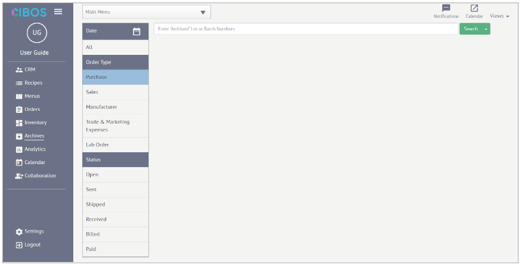8.1. How to search the Archive¶
Once an Order has been Archived, it is removed from the Orders page and now accessible within the Archives. To navigate the Archive to find specific Orders
Click the Calendar icon next to Date, select Custom range, and specify the Custom range using the pop-out Calendar. You can also select Last 7 Days or Last 30 Days. Then click Apply.
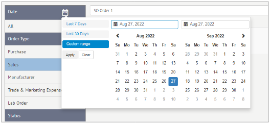Under the Order Type heading, select the appropriate option from the following list: Purchase, Sales, Manufacturer, Trade & Marketing Expenses, and Lab Order.
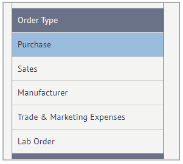Under the Status heading, select the appropriate option from the following list: Open, Sent, Shipped, Received, Billed, Paid. Click the Status option again to deselect.
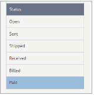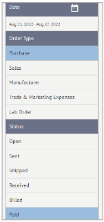
If you were looking for Archived Purchase Orders from the Last 7 Days that are Paid, you would search this using the search menu.
You can also search (or narrow down the list) using the Search Bar to enter Archived Lot or Batch Numbers.
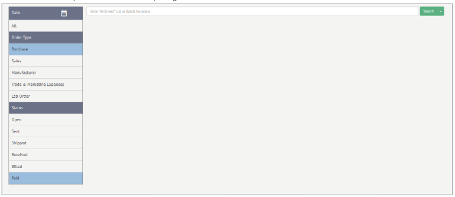For further help, click the Search Bar once to highlight and then move the cursor down to automatically expand the list of Archived orders.
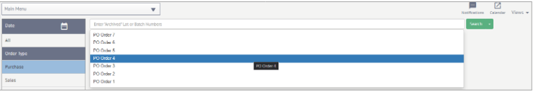Search results are displayed in the main body of the page. Easily check the Order Name, the snippet of order content, the Total, and the date the order was Paid.
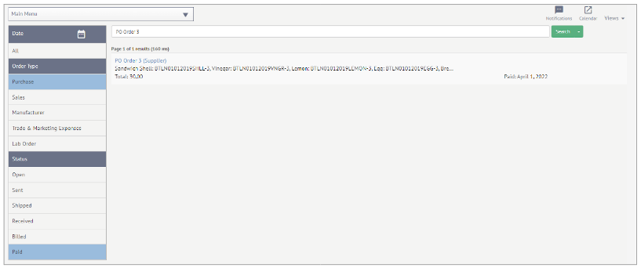Click on the Archived order for a closer look. Choose from the menu on the right-hand side to look at Order, Logistics, Received, and Status.
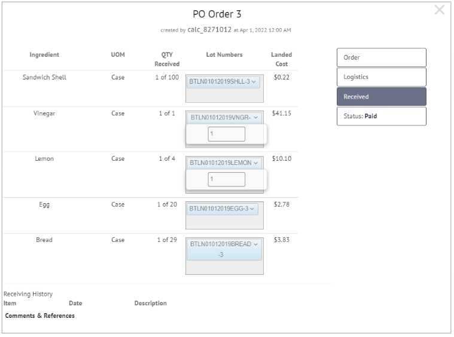
Order – provides an overview that matches the original Order entry
Logistics – displays the Vendor and vendor information that matches the original Order entry
Received – displays an overview of the specific items received, including Lot Numbers and Landed Cost
Status – current status of the order
8.2. Traceability¶
Cibos supports Traceability, so you can track a Lot or Batch of Raw Materials or Items through the entire supply chain before they reached your Inventory. Traceability can track which Lots or Batches of Raw Materials end up in which products/orders. Even when an item has been sold and removed from Inventory, it can still be tracked if needed. This is vital for efficient and effective handling of food recalls or other issues to best protect customers. Click the green arrow next to the green Search button to open the drop-down menu and select Trace to begin tracing.
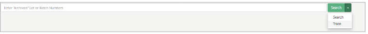
*How to Trace *
If you know the specific Lot or Batch numbers, enter this information into the Search Bar.
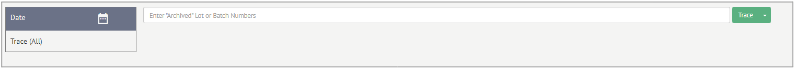For further help, click the Search Bar once to highlight and then move the cursor down to automatically expand the list of Archived orders.
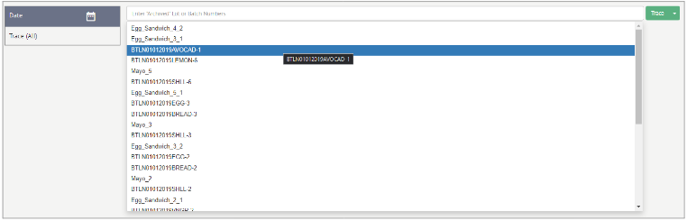Once an item has been picked from the list (in this case Egg_Sandwich_4_2), click Trace.
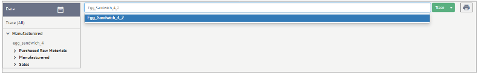To narrow down the results, use the menu on the left-hand side. Click the Calendar icon next to Date, select Custom range, and specify the Custom range using the pop-out Calendar. You can also select Last 7 Days or Last 30 Days. Then click Apply.
Click Manufactured to pull up all Manufacturing Orders that match the Egg_Sandwich_4_2 Lot Number.
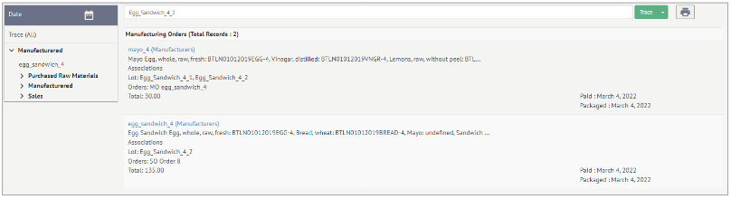Expand Purchased Raw Materials, Manufactured, and Sales to find all instances of that Lot Number (Egg_Sandwhich_4_2) that passed through your system.
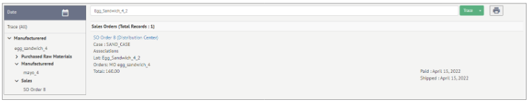
Purchased Raw Materials – click to view the Purchase Orders that match those Lot or Batch Numbers
Click Trace (All) to view all Manufacturing Orders, Purchase Orders, and Sales Orders that match the Lot or Batch Numbers (Egg_Sandwich_4_
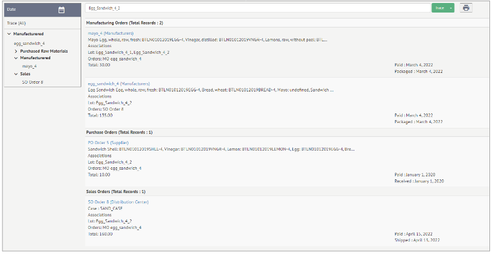
To print Trace results, click the Printer icon on the far-right-hand side next to the green Trace button.
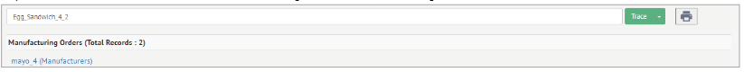